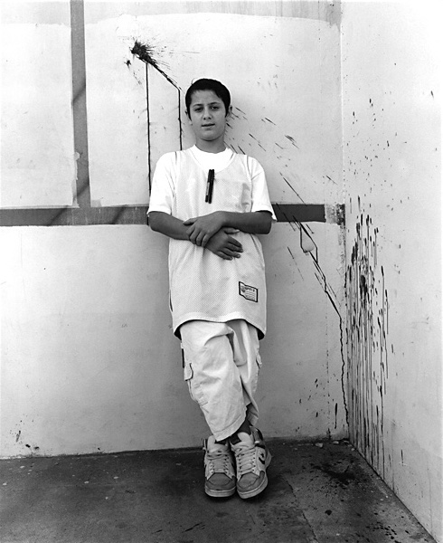
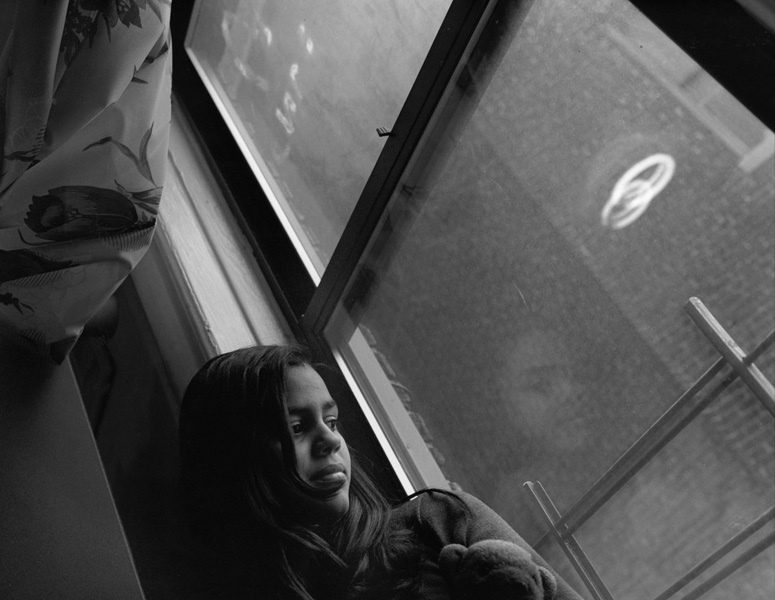
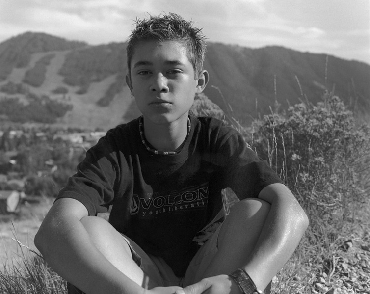
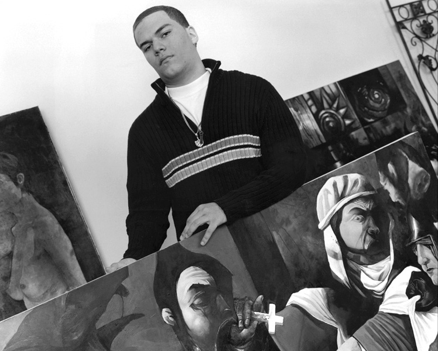
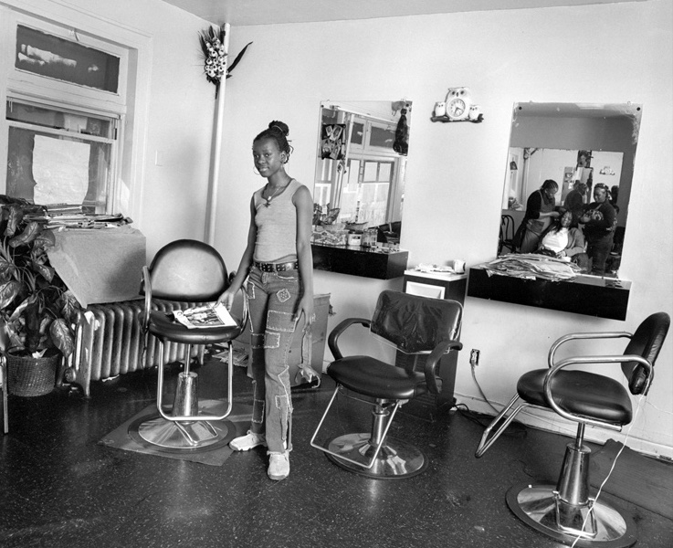
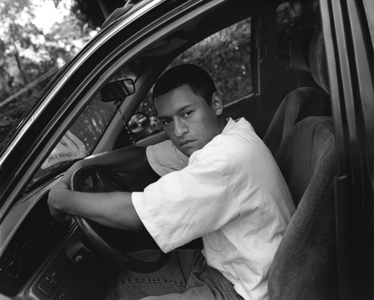
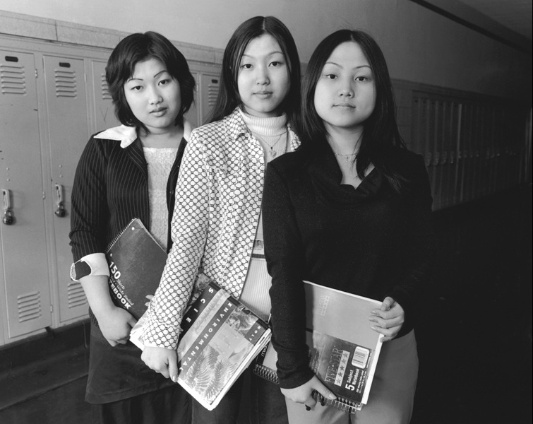

In many ways, ours is a nation of immigrants—hungry for freedom, peace, and the opportunity promised by the American Dream. The realities of that immigrant experience are most vividly read in the faces and words of young people who have made this journey.
Faithful to their native cultural traditions, but motivated to create a better life for themselves and their families, teenage immigrants have a unique vantage point from which to remind us what it means, and what it has always meant, to be American.
Becoming American: Teenagers and Immigration features 59 riveting black-and-white images of young immigrants by accomplished documentary photographer Barbara Beirne. Each sensitive portrait is paired with excerpts from Beirne’s interviews with teens from Latin America, the Caribbean, Europe, Africa, the Middle East, and Asia. All of their stories are unique, and we read in every quote—and in every face—the individual struggles and hopes of “becoming American.”
Becoming American: Teenagers and Immigration Tour Itinerary 2007-2011
The Historical and Cultural Society of Clay County, Moorhead, MN
Charlotte Museum of History, Charlotte, NC
Korn Gallery, Drew University, Madison, NJ
Rosenquist Gallery, Friends Seminary, New York, NY
Oregon Historical Society, Portland, OR
Fredericksburg Area Museum and Cultural Center, Fredericksburg, VA
Central Florida Community College, Ocala, FL
Historical Society of Saginaw County and the Castle Museum, Saginaw, MI
Durham Museum, Omaha, NE
Museo Alameda, San Antonio, TX
Skirball Cultural Center, Los Angeles, CA
National Steinbeck Center Museum, Salinas, CA
History San Jose, San Jose, CA
Washington State Historical Society, Tacoma, WA
Phoenix Gallery, New York, NY
New Americans Museum, San Diego, CA
Ellis Island Immigration Museum, Ellis Island, NY
The strongest connection I have with China, my native land, is through my parents.
I have seen the pain of leaving their beloved land upon which their memories are deeply
rooted.
I have seen their struggles to learn the English language and to survive in America.
But I have also been witness to their joys of accomplishment.
We bring our culture with us and share it. Truly, it has been a bittersweet journey.
Lili Shek, age 18
After the revolution, my parents left Iran because they could not practice their
Bahá'í
faith.
I'm sixteen years old and my parents are still really protective. They live in a
country
that is strange to them.
I have an 11:30 curfew, and I can't stay overnight at anyone's house.
Now after the terrible events at the World Trade Center, I'm worried that we are
going
to
have a war. I'm also afraid that all Arab people will be suspected of terrorism.
Sohale Mehrmanesh, age 16
My mother and father both left El Salvador because of the war. My parents met in America
and
got
married. I am glad I live in America because El Salvador is a very poor country and
it's
almost impossible to find a well paying job.
When we visit San Salvador, we cannot go out at night because of the organized gangs.
At
night,
you can hear gunshots. My family is happy and proud to live in America, the land of the
free.
Maritza Ortiz, age 13

In my country, it was always war. I saw people dying. I saw peole without arms, eyes,
hands
— without heads.
I was scared. My country, Kosovo, is not a strong country.
We finally got away, but I was upset. I left my family in my country. I left my stuff.
We went to Macedonia to a [refugee] camp, then to Fort Dix in New Jersey, then Arizona.
We
went
back to Kosovo,
but there were no jobs and no money. There were not even roads. We left again for
California.
Arsim Mustafa, age 14

We came to America so my brother and I could get a good education. In the Dominican
Republic, schools are very expensive.
in fact, everything is expensive even though the economy is very bad.
My family visits our relatives in the DR often, and I'm very proud of my
heritage.
The
people are friendly and it's part of our tradition to help the poor.
I try very hard to be concerned about people who have problems.
Natiorka Perez, age 16

If your question is, why in the heck do Mexicans and other Latinos come to live in our
country?
The answer is simple. Change!
In most Latin American countries, there are no benefits and you cannot receive a good
and stable
salary.
There are many jobs here in Wyoming.
Almost everyone works two or three jobs. My mother is a housekeeper and a waitress. I
think
Americans should try to better understand immigrants.
Communities could try to share their traditions, culture, and life with us.
Irving Bernel, age 13
It has been a challenge to balance and assimilate into my American culture while
maintaining
my
Indian roots and background.
I'm a typical teenage girl who loves to go to the mall with friends; however, I
have a
remarkable opportunity to be involved in a traditional Indian lifestyle.
Our place of worship, the Sri Venkateswara Temple, is an important part of my spiritual
life. I
particularly love the Indian classical dance called Kuchipudi which often tells the
tales of
the
gods and goddesses in Indian culture.
Nidhi V. Pamidimukkala, age 16

If I still lived in Cuba, I would probably be in jail, because I feel that it is most
important
for an artist to have freedom of expression. In Cuba, the government encourages artists
to
only
paint pro-revolutionary subjects or portraits of Fidel Castro.
Any subject that questions the government could be dangerous for the artist, family, and
even
friends. Here I can paint anything I choose. Recently, the subject of my paintings has
been
war
and its affect on people's spirit and being.
I want to investigate important subjects.
Marcial Ramos, age 16

My mother has her own business - an African braiding shop. I come here to help after
school.
It's so hard to move to a new country. I really miss my freinds and Guinea's
warm
weather. I miss not being able to speak French, and most of all, I miss my grandma.
What surprised me about this country is that in the city where I live there are so many
homeless
people. How could this happen in America?
Mawa Fofana, age 17
Most of my life I have lived in America. But I stil feel I'm Japanese. I love
Japanese
culture, and I'll probably go back there to live someday.
It's been lucky for me that I've been able to study music in America. In
Japan
the
emphasis is on technique, and you can never make a mistake.
In this country, you are encouraged to be yourself.
It makes music more enjoyable. I have two tubas, and their names are Nadia and Gina.
They
will
have to be my girlfriends for a while - until I have time for the real thing.
Koki Ohmura, age 16

My family left Guatemala four years ago. We now live in a neighborhood that's all
Spanish,
but it is still very different than home.
In my town, people spend a lot of time outside. Here it's very quiet, and you
don't
get to know many people. My grandfather was a farmer, but I want to be an auto mechanic.
I don't think it should be so hard to get your papers here. It can take up to ten
years
which really causes a lot of problems.
Otto Cayay, age 18

In Cambodia, students do not study, because even if you have a higher education you do
not
make
good money. The government does not pay the people well.
Also the justice system is not working. People rob each other, and there are many
kidnappings.
You have to pay a lot of money to get your child back.
We came here to find a safe place. Our life in America is very different. We already
have a
grocery store.